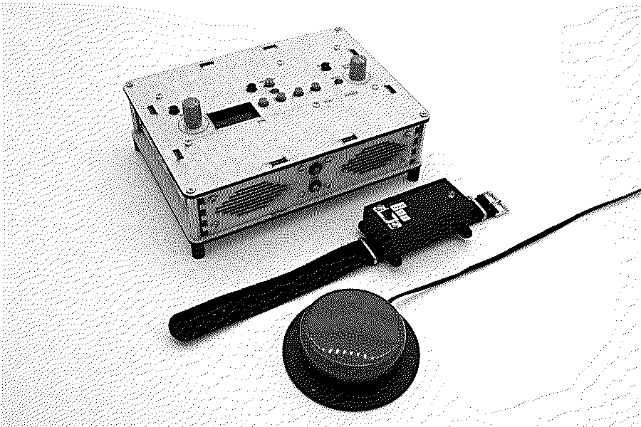
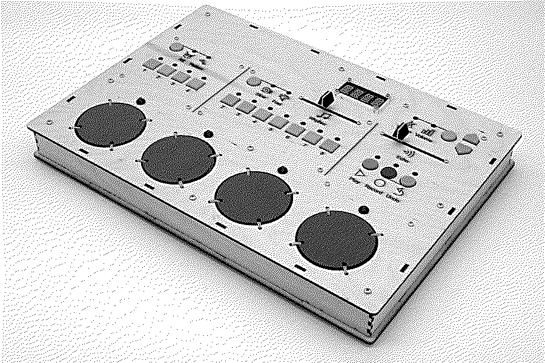
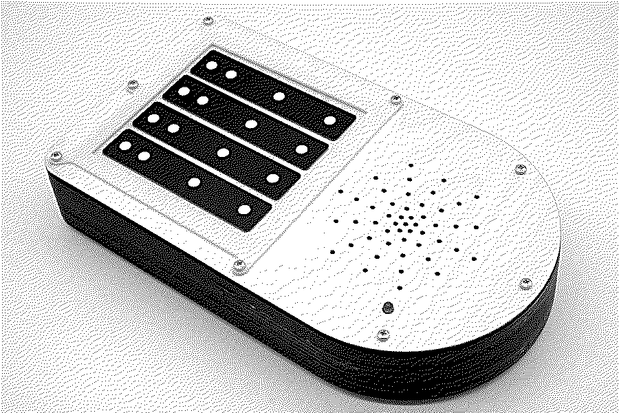

instrument one
with Drake Music NI
Guitar-inspired. A wrist sensor strums as the player moves their arm, and a switch changes the chords.
Instruments · co-designed with disabled musicians · free
If the instruments you've tried don't fit you, we'd like to make one with you. You decide what it does and how you play it. We build it from open, low-cost parts and show you how to fix and change it. It's free: our workshops pay for it. And if you'd like to build one yourself, the workshops are open to you too.
We're starting in Northern Ireland, then the rest of the UK.
Prefer to talk? Email us a number and a good time and we'll ring you.
Work with disabled musicians? Organisations can get in touch too, with the musician involved from the start. See working with organisations.
Get in touch. You, someone who supports you, or an organisation you work with tells us about your music.
Design it together. We meet a few times and try things out. You make the decisions.
We build it, with you if you'd like.
Learn to look after it. We show you, and anyone who helps you, how to repair and change it.
We check in after six months, and keep helping after that.
Alex co-designed these with disabled musicians as part of his PhD at Queen's University Belfast, before noise guaranteed began.

with Drake Music NI
Guitar-inspired. A wrist sensor strums as the player moves their arm, and a switch changes the chords.

with Drake Music NI
A drum machine with four pads that respond to how hard they're hit, a loop recorder and a rhythm generator.

with the OHMI Trust
A one-handed violin that sits on a tray. Press a touch-string to bow a note, or lift off to pluck it.
Every instrument runs on cheap, standard boards, so its owner, we, or anyone with the basics can fix it. With your permission we publish the design. You decide what's shared and whether your name is on it.
Making music also depends on the people and places around a musician. So we work with music therapists, SEND schools and community groups to design tools that fit how they work.